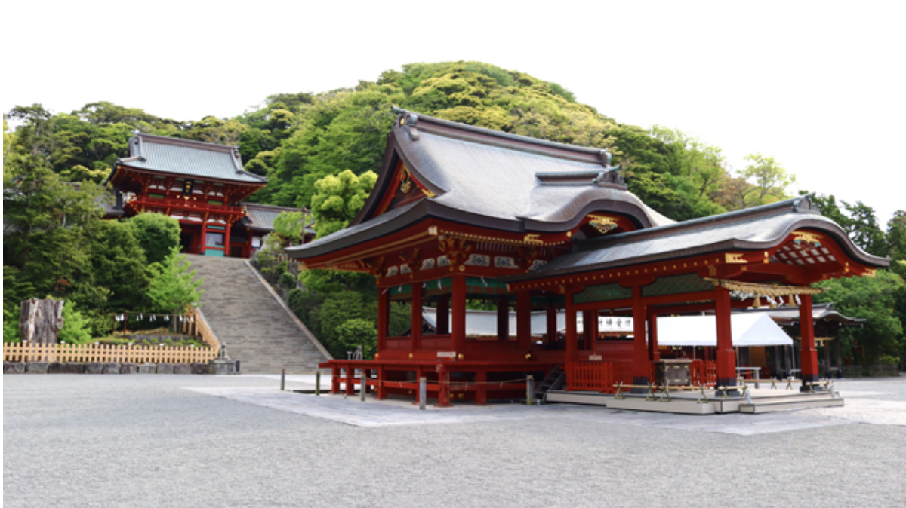
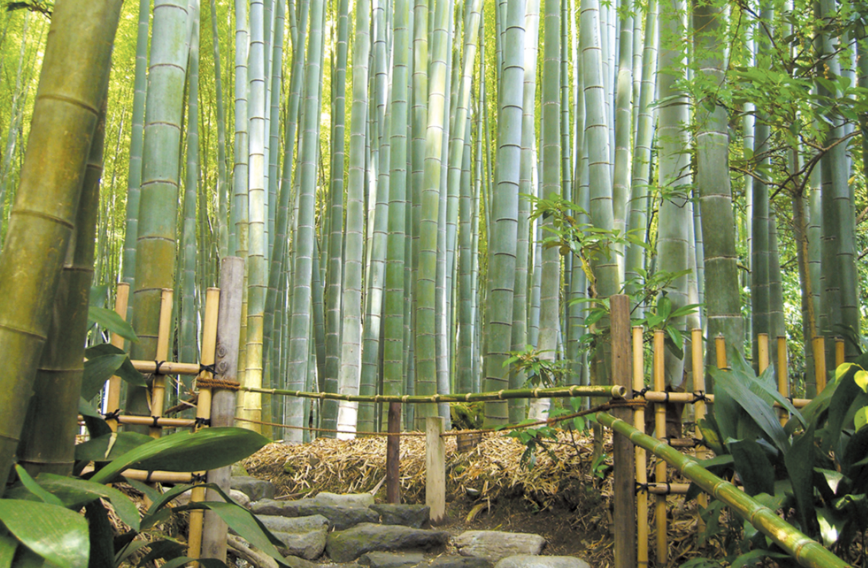
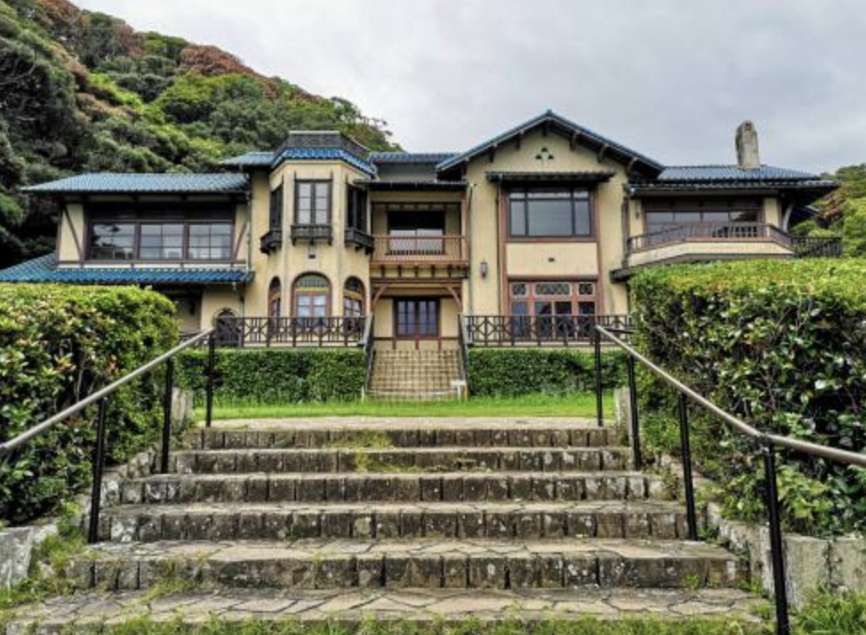
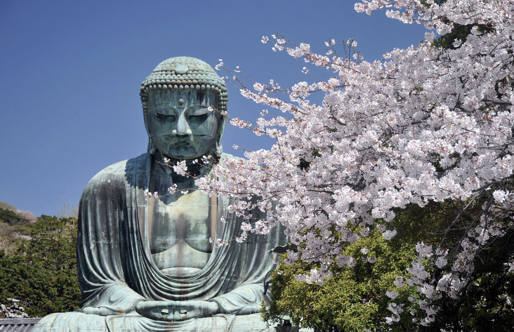
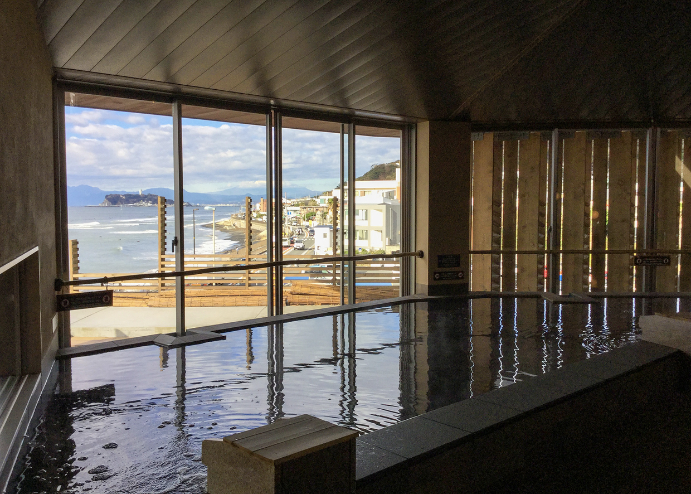
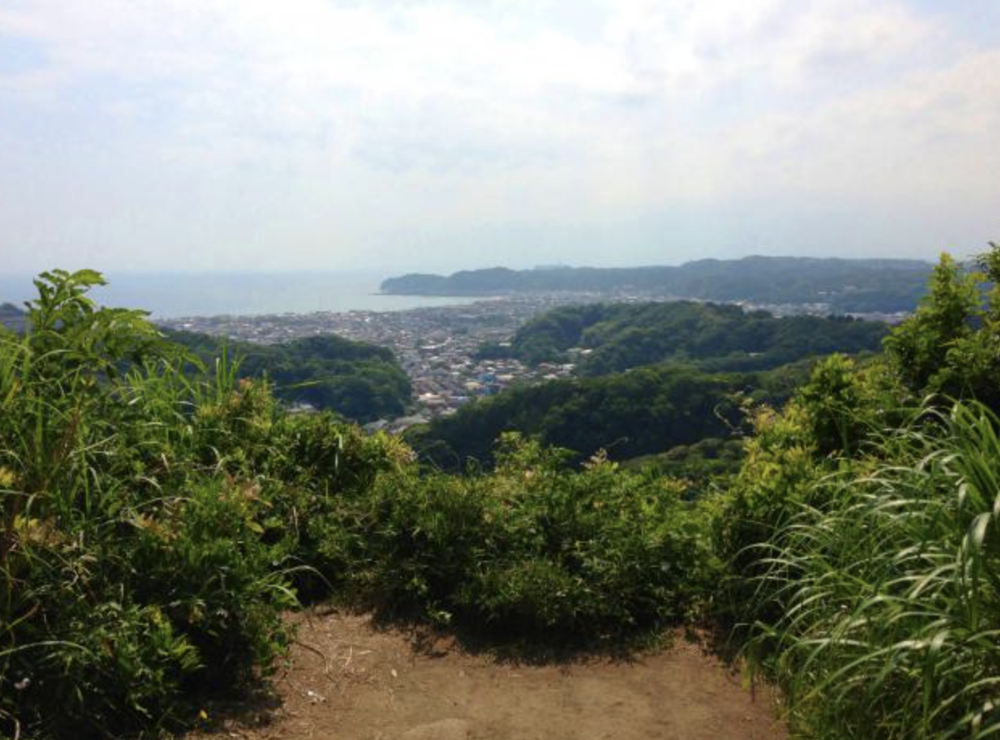
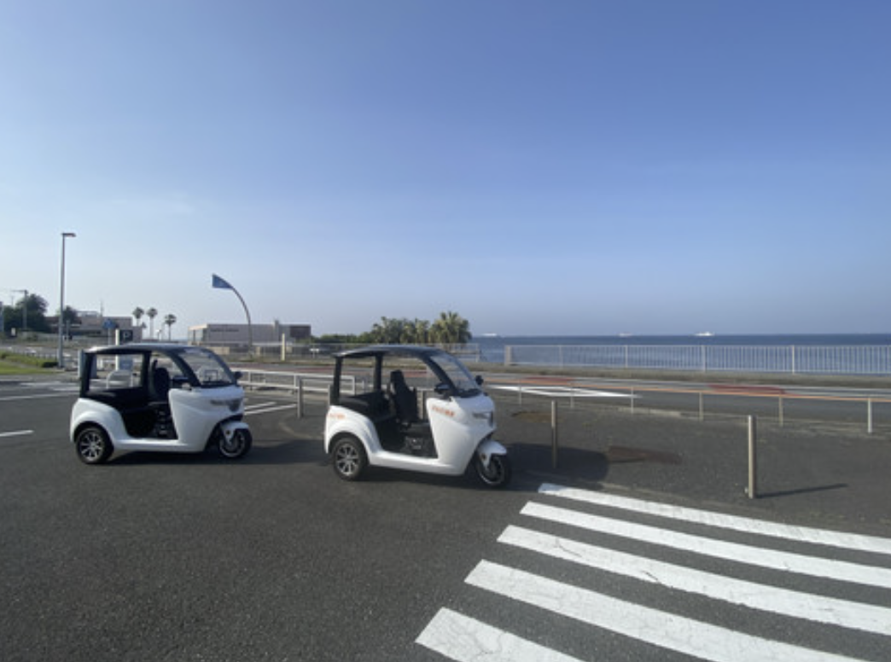

検索で探す

鶴岡八幡宮
アクセス：JR「鎌倉」駅・江ノ島電鉄「鎌倉」駅東口より徒歩約10分
営業情報：年中無休 6:00~20:30
入場料：無料
鶴岡八幡宮の地図はここ！
明月院
アクセス：JR「北鎌倉」駅より徒歩10分
営業情報：9：00〜16：00 水、木曜日お休み
明月院の地図はここ！

報国寺
アクセス： 金沢八景駅方面行きで9分、浄明寺下車、徒歩3分
営業情報：9:00〜16:00
報国寺の地図はここ！

鎌倉文学館
アクセス：江ノ島電鉄由比ヶ浜駅から徒歩7分
営業情報：9:00～16:30
鎌倉文学館の地図はここ！

鎌倉大仏殿高徳院
アクセス：江ノ島電鉄長谷駅から徒歩7分
営業情報：8:00～17:30
鎌倉大仏殿高徳院の地図はここ！
横浜市立金沢動物園
アクセス：京急本線金沢文庫駅から京急バス野村住宅センター行きで12分、夏山坂上下車、徒歩6分
営業情報：9:30～16:00
横浜市立金沢動物園の地図はここ！

稲村ケ崎温泉
アクセス：江ノ島電鉄稲村ヶ崎駅から徒歩5分
営業情報：9:00～20:00
稲村ケ崎温泉の地図はここ！

衣張山
アクセス：R横須賀線鎌倉駅から京急バスハイランド行きで7分、杉本観音下車、徒歩20分
衣張山の地図はここ！

「えもび」鎌倉店
電動トゥクトゥクレンタル
アクセス：鎌倉駅から徒歩2分
「えもび」鎌倉の詳しい内容はここ！
おすすめの鎌倉観光コース
① おすすめの観光コース